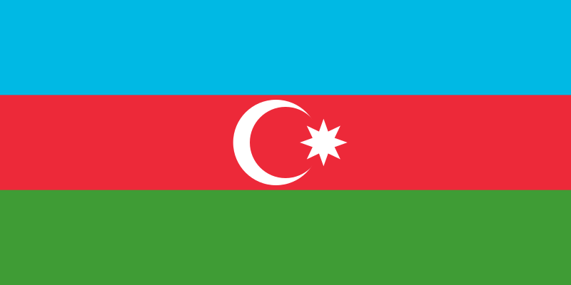
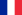

İlham Heydər oğlu Əliyev
(d. 24 dekabr 1961, Bakı) —
Azərbaycanın dövlət, siyasi və
olimpiya hərəkatı xadimi, Azərbaycan
Respublikasının Prezidenti (2003-cü ildən).
Həmçinin, 1997-ci ildən Azərbaycan
Milli Olimpiya Komitəsinin prezidenti,
2003-cü il avqust-noyabr aylarında
Azərbaycan Respublikasının Baş naziri,
2005-ci ildən Yeni Azərbaycan Partiyasının sədridir.
İlham Əliyev 1961-ci il dekabrın 24-də Bakı
şəhərində anadan olmuşdur. 1967–1977-ci illərdə
Bakı şəhərindəki 6 saylı orta məktəbdə təhsil
almışdır. 1977-ci ildə Moskva Dövlət Beynəlxalq
Münasibətlər İnstitutuna daxil olmuşdur. Oranı
bitirdikdən sonra institutun aspiranturasına
qəbul edilmiş, 1985-ci ildə dissertasiya müdafiə
edərək tarix elmləri namizədi elmi dərəcəsi almışdır.
1985–1990-cı illərdə Moskva Dövlət Beynəlxalq
Münasibətlər İnstitutunda müəllim işləmişdir.
1991–1994-cü illərdə özəl biznes sahəsində
çalışmışdır. Bir sıra istehsal-kommersiya
müəssisələrinə rəhbərlik etmişdir.
1994-cü ildən 2003-cü ilin avqust ayınadək
Azərbaycan Respublikası Dövlət Neft Şirkətinin
vitse-prezidenti, birinci vitse-prezidenti
olmuşdur. Heydər Əliyevin neft strategiyasının
həyata keçirilməsində fəal iştirak etmişdir.
Suveren Azərbaycanın neft siyasətinin geosiyasi
aspektlərinə dair bir sıra tədqiqat işlərinin
müəllifidir. Siyasi elmlər doktorudur.
1995-ci və 2000-ci illərdə Azərbaycan
Respublikası Milli Məclisinə deputat
seçilmişdir. 2003-cü ildə Azərbaycan
Respublikasının Baş naziri vəzifəsinə
təyin edilməsi ilə əlaqədar olaraq deputat
səlahiyyətlərinə xitam vermişdir. 1997-ci
ildən Azərbaycan Milli Olimpiya Komitəsinin
prezidentidir. İdmanın və Olimpiya hərəkatının
inkişafında böyük xidmətlərinə görə Beynəlxalq
Olimpiya Komitəsinin ali ordeni ilə təltif
edilmişdir. 1999-cü ildə Yeni Azərbaycan Partiyası
sədrinin müavini, 2001-ci ildə sədrin birinci
müavini, 2005-ci ildə isə partiyanın sədri
seçilmişdir. 2001–2003-cü illərdə Avropa Şurası
Parlament Assambleyasında Azərbaycan Respublikası
Milli Məclisinin nümayəndə heyətinin rəhbəri
olmuşdur. 2003-cü ilin yanvarında Avropa Şurası
Parlament Assambleyası sədrinin müavini,
AŞPA-nın Büro üzvü seçilmişdir. 2004-cü
ilin aprelində AŞPA-nın fəaliyyətində fəal
iştirakına və Avropa ideallarına sədaqətinə
görə AŞPA-nın fəxri üzvü diplomu və AŞPA
medalı ilə təltif edilmişdir. 2003-cü il
avqustun 4-də Milli Məclis tərəfindən təsdiq
edildikdən sonra Azərbaycan Respublikasının
Baş naziri təyin edilmişdir. 2003-cü il 15
oktyabrda Azərbaycan Republikasının Prezidenti
seçilmişdir. Prezident seçkilərində seçicilərin
76%-dən çoxu İlham Əliyevin lehinə səs vermişdir.
2003-cü il oktyabrın 31-də vəzifəsinin icrasına
başlamışdır. 2008-ci ildə yenidən prezident seçilmişdir.
2013-cü ildə üçüncü müddətə prezident seçilmişdir. .
2018-ci ildə səslərin 86,03% -ni toplayaraq dördüncü
müddətə Azərbaycan Respublikasının prezidenti seçilmiş
və hazırda prezident vəzifəsini icra edir.
-  "Heydər Əliyev" ordeni
- "Kral Əbdüləziz" ordeni
-
 "Şərəf" ordeni
"Şərəf" ordeni
-
 "Mübarək əl-Kəbir" ordeni
"Mübarək əl-Kəbir" ordeni
-  "Üç ulduz" ordeninin "Böyük xaç kavaleri" dərəcəsi.
-
 Bolqarıstan Respublikasının ali mükafatı – "Stara Planina" ordeni
Bolqarıstan Respublikasının ali mükafatı – "Stara Planina" ordeni
- Belarus Respublikasının Dostluq ordeni
-
 Beynəlxalq münasibətlər və sülh naminə İhsan Doğramacı mükafatı
Beynəlxalq münasibətlər və sülh naminə İhsan Doğramacı mükafatı
- "İlin adamı" – 2010-cu ilin noyabr ayında Buxarest şəhərində Rumıniyanın "Balcanii şi Europa" ("Balkanlar və Avropa") jurnalı tərəfindən təqdim edilib.
- Yunanıstan parlamentinin Qızıl medalı
- "Şeyxülislam" ordeni
-
 Rusiya Pravoslav Kilsəsinin "Prepodobnıy Serqiy Radonejskiy" birinci dərəcəli Ordeni
Rusiya Pravoslav Kilsəsinin "Prepodobnıy Serqiy Radonejskiy" birinci dərəcəli Ordeni
- "Böyük Kordon" Şərəf Ordeni (Beynəlxalq Hərbi-İdman Şurası)
- FİLA-nın Şərəf Zalının ən yüksək "İdman Əfsanəsi" ordeni
- Avropa Ədalətli Oyunlar Hərəkatının "Şərəf" nişanı
- MDB ölkələrin İdman Təşkilatlarının Beynəlxalq Konfederasiyasının "Şərəf Ordeni"
- "Birlik" ordeni
-
 "İsmoili Somoni" ordeni.
"İsmoili Somoni" ordeni.
- "Xalqlar dostluğu" ordeni
-
Birinci Dərəcəli Türkiyə Respublikası Dövlət Ordeni (2013)
-
 Azadlıq Ordeni (2013)
Azadlıq Ordeni (2013)
- Cənub-Cənub mükafatı
-
 “Xidmətlərinə görə” böyük lentlə birlikdə Böyük Xaç Kavaleri ordeni
“Xidmətlərinə görə” böyük lentlə birlikdə Böyük Xaç Kavaleri ordeni